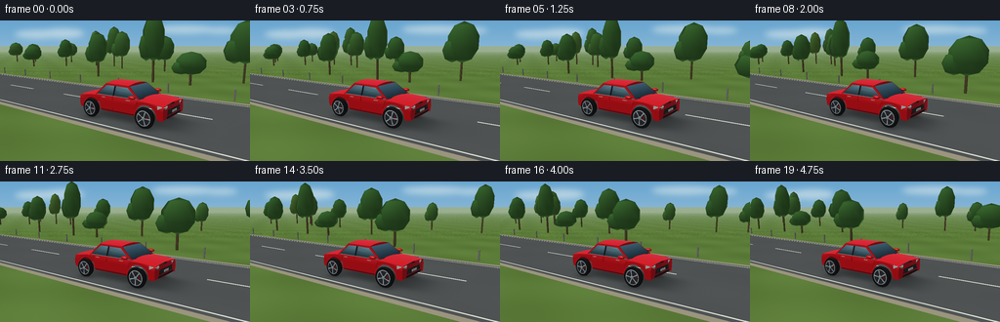
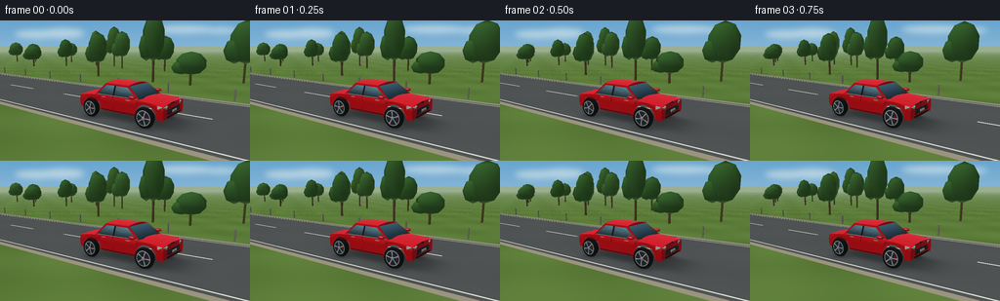

CODING AGENTS AS PIXEL WORLD MODELS
traex/GPT-6.1-Sol · instance_preservation_0028
点击播放 · 原生 RGB 像素
逐轮保存的候选
回放视频、检查图与代码变化。
每份候选均可单独播放。实际图片检查记录在下方工具轨迹中。
候选 01播放与检查图
点击播放 · 原生 RGB 像素


展开代码变化
--- 上一保存版本
+++ 本次保存版本
@@ -0,0 +1,297 @@
+import json, math
+from pathlib import Path
+import numpy as np
+from PIL import Image, ImageDraw, ImageFilter
+import artifact_io
+
+ROOT = Path(__file__).resolve().parent
+SPEC = json.loads((ROOT/'task_spec.json').read_text())
+W,H=SPEC['width'],SPEC['height']
+SS=3
+SW,SH=W*SS,H*SS
+LIGHT=np.array([-0.3,0.85,0.43]); LIGHT/=np.linalg.norm(LIGHT)
+
+def norm(v):
+ a=np.asarray(v,float)
+ return a/(np.linalg.norm(a,axis=-1,keepdims=True)+1e-12)
+
+class Renderer:
+ def __init__(self, eye, target, background):
+ self.eye=np.array(eye,float)
+ self.forward=norm(np.array(target)-self.eye)
+ self.right=norm(np.cross(self.forward,[0,1,0]))
+ self.up=np.cross(self.right,self.forward)
+ self.f=246*SS
+ self.img=background.astype(float)
+ self.depth=np.full((SH,SW),np.inf)
+ def camera(self,p):
+ p=np.asarray(p)-self.eye
+ return np.stack([p@self.right,p@self.up,p@self.forward],axis=-1)
+ def project(self,p):
+ q=self.camera(p)
+ return np.stack([SW/2+self.f*q[...,0]/q[...,2],SH/2-self.f*q[...,1]/q[...,2],q[...,2]],axis=-1)
+ def triangle(self, vertices, color, gloss=0., normals=None, unlit=False):
+ v=np.asarray(vertices,float)
+ q=self.project(v)
+ if np.min(q[:,2])<.1:return
+ lo=np.maximum(np.floor(q[:,:2].min(axis=0)).astype(int),[0,0])
+ hi=np.minimum(np.ceil(q[:,:2].max(axis=0)).astype(int),[SW-1,SH-1])
+ if np.any(lo>hi):return
+ n=norm(np.cross(v[1]-v[0],v[2]-v[0]))
+ view=norm(self.eye-v.mean(axis=0))
+ if np.dot(n,view)<0:n=-n
+ ns=np.tile(n,(3,1)) if normals is None else norm(normals)
+ ns=np.where((ns@view)[:,None]<0,-ns,ns)
+ c=np.asarray(color,float)
+ if c.ndim==1:c=np.tile(c,(3,1))
+ if not unlit:
+ diffuse=np.maximum(ns@LIGHT,0)
+ c=c*(.53+.47*diffuse[:,None])
+ if gloss:
+ half=norm(LIGHT+norm(self.eye-v))
+ sp=np.maximum(np.sum(ns*half,axis=1),0)**45
+ fres=(1-np.maximum(np.sum(ns*norm(self.eye-v),axis=1),0))**3
+ c+=gloss*(sp[:,None]*np.array([145,145,130])+fres[:,None]*np.array([28,43,57]))
+ x0,y0=q[0,:2];x1,y1=q[1,:2];x2,y2=q[2,:2]
+ den=(y1-y2)*(x0-x2)+(x2-x1)*(y0-y2)
+ if abs(den)<1e-7:return
+ xx,yy=np.meshgrid(np.arange(lo[0],hi[0]+1)+.5,np.arange(lo[1],hi[1]+1)+.5)
+ a=((y1-y2)*(xx-x2)+(x2-x1)*(yy-y2))/den
+ b=((y2-y0)*(xx-x2)+(x0-x2)*(yy-y2))/den
+ d=1-a-b
+ inv=a/q[0,2]+b/q[1,2]+d/q[2,2]
+ zz=1/np.maximum(inv,1e-10)
+ target=self.depth[lo[1]:hi[1]+1,lo[0]:hi[0]+1]
+ mask=(a>=-1e-5)&(b>=-1e-5)&(d>=-1e-5)&(zz<target)
+ if not mask.any():return
+ col=(a[...,None]*c[0]/q[0,2]+b[...,None]*c[1]/q[1,2]+d[...,None]*c[2]/q[2,2])/inv[...,None]
+ target[mask]=zz[mask]
+ patch=self.img[lo[1]:hi[1]+1,lo[0]:hi[0]+1]
+ patch[mask]=col[mask]
+ def quad(self,v,col,gloss=0,normals=None,unlit=False):
+ for ix in ([0,1,2],[0,2,3]):
+ self.triangle(np.asarray(v)[ix],np.asarray(col)[ix] if np.asarray(col).ndim==2 else col,gloss,None if normals is None else np.asarray(normals)[ix],unlit)
+ def box(self,a,b,color,gloss=0):
+ x0,y0,z0=a;x1,y1,z1=b
+ pts=np.array([[x0,y0,z0],[x1,y0,z0],[x1,y1,z0],[x0,y1,z0],[x0,y0,z1],[x1,y0,z1],[x1,y1,z1],[x0,y1,z1]])
+ for i in ([0,1,2,3],[4,7,6,5],[0,4,5,1],[3,2,6,7],[1,5,6,2],[0,3,7,4]):self.quad(pts[i],color,gloss)
+ def ellipsoid(self,center,radii,color,gloss=0,nlon=12,nlat=7):
+ ce=np.asarray(center);ra=np.asarray(radii)
+ rings=[];nr=[]
+ for j in range(nlat+1):
+ phi=-np.pi/2+np.pi*j/nlat
+ uv=np.array([[math.cos(phi)*math.cos(2*np.pi*k/nlon),math.sin(phi),math.cos(phi)*math.sin(2*np.pi*k/nlon)] for k in range(nlon)])
+ rings.append(ce+uv*ra);nr.append(norm(uv/ra))
+ for j in range(nlat):
+ for k in range(nlon):
+ l=(k+1)%nlon
+ self.quad([rings[j][k],rings[j][l],rings[j+1][l],rings[j+1][k]],color,gloss,[nr[j][k],nr[j][l],nr[j+1][l],nr[j+1][k]])
+ def line(self,a,b,radius,color):
+ a=np.array(a);b=np.array(b);u=norm(b-a)
+ e=norm(np.cross(u,[0,1,0] if abs(u[1])<.9 else [1,0,0]));f=np.cross(u,e)
+ for k in range(6):
+ t=k*np.pi/3;s=(k+1)*np.pi/3
+ o=radius*(e*np.cos(t)+f*np.sin(t));p=radius*(e*np.cos(s)+f*np.sin(s))
+ self.quad([a+o,b+o,b+p,a+p],color)
+
+rng=np.random.default_rng(731)
+TREES=[(float(x),float(rng.uniform(-25,-6)),float(rng.uniform(2.3,5.4)),float(rng.uniform(.85,1.6)),int(rng.integers(0,3))) for x in np.linspace(-100,115,64)]
+
+def background(r,carx):
+ yy,xx=np.mgrid[:SH,:SW]
+ ray=r.forward+(xx[...,None]+.5-SW/2)/r.f*r.right-(yy[...,None]+.5-SH/2)/r.f*r.up
+ tt=-r.eye[1]/np.where(abs(ray[...,1])<1e-7,1e-7,ray[...,1])
+ world=r.eye+tt[...,None]*ray
+ x,z=world[...,0],world[...,2]
+ sky=np.zeros((SH,SW,3),float)
+ t=np.clip(yy/(SH*.70),0,1)
+ sky[:]=np.array([104,165,208])*(1-t[...,None])+np.array([211,225,228])*t[...,None]
+ # Soft high-altitude clouds, deliberately subdued behind the main subject.
+ cloud=Image.new('L',(SW,SH));draw=ImageDraw.Draw(cloud)
+ for cx,cy,rx,ry in [(39,14,24,4),(64,13,22,5),(188,9,33,4),(226,10,17,3)]:
+ draw.ellipse(((cx-rx)*SS,(cy-ry)*SS,(cx+rx)*SS,(cy+ry)*SS),fill=135)
+ al=np.array(cloud.filter(ImageFilter.GaussianBlur(3*SS)))/255
+ sky=sky*(1-al[...,None])+np.array([239,244,240])*al[...,None]
+ # Layered hills, with atmospheric perspective and gentle motion parallax.
+ horizon=SH/2-r.f*r.forward[1]/np.hypot(r.forward[0],r.forward[2])
+ for level,col in [(0,[138,168,156]),(1,[105,143,120]),(2,[80,119,82])]:
+ ph=(np.arange(SW)/SS+carx*(.055+.03*level))
+ ridge=horizon-(4+level*2)*SS + SS*(3*np.sin(ph*.031+level*2)+2*np.sin(ph*.067+1+level))
+ mask=(yy>ridge[None,:])&(yy<horizon+24*SS)
+ sky[mask]=col
+ valid=(tt>0)&(ray[...,1]<0)
+ road=(np.abs(z)<3.7)
+ grit=(np.sin(x*83.3+z*129.4)*np.sin(x*152.5-z*57.6))
+ low=np.sin(x*.75)*np.sin(z*1.16)
+ grass=np.stack([92+6*grit+5*low,124+10*grit+6*low,57+4*grit+4*low],axis=-1)
+ asphalt=np.stack([79+3.4*grit+1.3*low,83+3.4*grit+1.3*low,84+3.4*grit+1.3*low],axis=-1)
+ ground=np.where(road[...,None],asphalt,grass)
+ shoulder=(abs(z)>3.7)&(abs(z)<4.04)
+ ground[shoulder]=np.stack([155+9*grit[shoulder],149+9*grit[shoulder],127+8*grit[shoulder]],axis=-1)
+ edge=(abs(abs(z)-3.43)<.045)
+ dash=(abs(z)<.06)&(np.mod(x,6.7)<3.25)
+ ground[edge|dash]=[218,221,209]
+ # A contact shadow and a broad soft shadow stay attached to the same car.
+ sx=x-(carx+.27);sz=z-1.63
+ sh=np.exp(-((sx/2.4)**4+(sz/.97)**4))*0.38
+ for wx in [-1.42,1.42]:
+ for wz in [.80,2.80]:sh+=.25*np.exp(-((x-carx-wx)/.42)**2-((z-wz)/.3)**2)
+ ground*=1-np.minimum(sh,.62)[...,None]
+ fog=np.clip((tt-28)/160,0,.78)
+ ground=ground*(1-fog[...,None])+np.array([172,190,171])*fog[...,None]
+ sky[valid]=ground[valid]
+ r.img=sky
+ # Plane depth prevents anything below ground from leaking through.
+ r.depth[valid]=r.camera(world[valid])[:,2]
+
+def environment(r,carx):
+ # Posts and rail run parallel to the road and provide easy-to-read parallax.
+ for x in np.arange(-100,130,4.3):
+ if abs(x-carx)>34:continue
+ r.box([x,.02,-4.47],[x+.09,.72,-4.37],[130,132,123],.15)
+ r.box([carx-38,.59,-4.43],[carx+38,.75,-4.33],[174,178,168],.3)
+ r.box([carx-38,.66,-4.31],[carx+38,.70,-4.29],[219,218,198],.25)
+ for x,z,h,rad,kind in TREES:
+ if abs(x-carx)>43:continue
+ center=r.project([x,h/2,z])
+ if center[0]<-45*SS or center[0]>SW+45*SS:continue
+ r.box([x-.08,0,z-.08],[x+.08,h*.74,z+.08],[89,76,48])
+ color=([57,103,47],[65,111,51],[79,118,51])[kind]
+ r.ellipsoid([x,h*.76,z],[rad,h*.40,rad*.82],color,nlon=9,nlat=5)
+ r.ellipsoid([x-rad*.60,h*.6,z+.16],[rad*.68,h*.24,rad*.67],color,nlon=8,nlat=4)
+
+def car(r,cx,dist):
+ zc=1.8;bounce=.009*math.sin(dist*2.4)
+ def p(x,y,z):return [x+cx,y+bounce,z+zc]
+ def q(v,c,gloss=.8):r.quad([p(*a) for a in v],c,gloss)
+ def line(a,b,rad,c):r.line(p(*a),p(*b),rad,c)
+ red=[196,17,25]; bright=[216,23,31]; darkred=[143,10,18]
+ # Sculpted side panels and rounded tops; the wheel openings are actual geometry.
+ xs=sorted(set(np.linspace(-2.18,2.18,74).tolist()+[-1.92,-.92,.92,1.92]))
+ def top(x):return 1.065-.115*(abs(x)/2.18)**4
+ def bottom(x):
+ b=.39
+ for wx in [-1.42,1.42]:
+ d=x-wx
+ if abs(d)<.50:b=max(b,.44+np.sqrt(.50**2-d*d))
+ return b
+ for s in [-1,1]:
+ for a,b in zip(xs[:-1],xs[1:]):
+ for band in range(3):
+ v=[];ns=[]
+ for x,t in [(a,band/3),(b,band/3),(b,(band+1)/3),(a,(band+1)/3)]:
+ y=bottom(x)*(1-t)+top(x)*t
+ z=s*(.905+.06*np.sin(t*np.pi))
+ v.append(p(x,y,z));ns.append(norm([.03*x,.14+(.30 if t>.75 else -.07),s]))
+ r.quad(v,red,.8,ns)
+ # The red wheel arch lips.
+ for wx in [-1.42,1.42]:
+ for a in np.linspace(0,np.pi,36)[:-1]:
+ b=a+np.pi/35
+ q([(wx+.50*np.cos(a),.44+.50*np.sin(a),s*.973),(wx+.50*np.cos(b),.44+.50*np.sin(b),s*.973),(wx+.535*np.cos(b),.44+.535*np.sin(b),s*.970),(wx+.535*np.cos(a),.44+.535*np.sin(a),s*.970)],bright)
+ q([(-.89,.41,s*.92),(.90,.41,s*.92),(.90,.48,s*.975),(-.89,.48,s*.975)],darkred)
+ # Rounded hood and rear trunk, thin highlights on the contour.
+ for xa,xb in [(-2.18,-1.12),(.98,2.18)]:
+ for a,b in zip(np.linspace(xa,xb,14)[:-1],np.linspace(xa,xb,14)[1:]):
+ for za,zb in zip(np.linspace(-.92,.92,15)[:-1],np.linspace(-.92,.92,15)[1:]):
+ vs=[];ns=[]
+ for x,z in [(a,za),(b,za),(b,zb),(a,zb)]:
+ y=top(x)+.065*(1-(z/.92)**2)
+ vs.append(p(x,y,z));ns.append(norm([.06*np.sign(x)*(abs(x)/2.18)**3,1,z*.16]))
+ r.quad(vs,bright,.9,ns)
+ # Rounded end panels, with black intake and LED headlight assemblies.
+ for sign in [-1,1]:
+ x=sign*2.18
+ for za,zb in zip(np.linspace(-.91,.91,16)[:-1],np.linspace(-.91,.91,16)[1:]):
+ q([(x-.055*sign*abs(za),.41,za),(x-.055*sign*abs(zb),.41,zb),(x-.05*sign*abs(zb),.95,zb),(x-.05*sign*abs(za),.95,za)],red)
+ q([(2.191,.57,-.60),(2.191,.57,.60),(2.191,.78,.55),(2.191,.78,-.55)],[21,26,28],.15)
+ for yy in [.60,.65,.70,.75]:line((2.20,yy,-.55),(2.20,yy,.55),.008,[65,69,69])
+ q([(2.20,.45,-.69),(2.20,.45,.69),(2.20,.53,.65),(2.20,.53,-.65)],[30,31,31],.2)
+ q([(2.211,.61,-.22),(2.211,.61,.22),(2.211,.715,.22),(2.211,.715,-.22)],[222,226,216],.1)
+ line((2.218,.655,-.14),(2.218,.655,.14),.007,[77,86,87])
+ for s in [-1,1]:
+ q([(2.165,.81,s*.58),(2.125,.83,s*.87),(2.115,.965,s*.87),(2.165,.948,s*.55)],[[142,163,169],[173,194,200],[232,244,234],[211,229,226]],.4)
+ line((2.175,.9,s*.59),(2.13,.9,s*.84),.018,[245,245,221])
+ q([(1.93,.83,s*.949),(2.12,.835,s*.918),(2.12,.95,s*.918),(1.93,.98,s*.949)],[205,218,216],.4)
+ q([(-2.17,.81,s*.5),(-2.14,.81,s*.87),(-2.14,.93,s*.87),(-2.17,.95,s*.5)],[129,8,17],.5)
+ line((-2.185,.892,s*.53),(-2.155,.884,s*.85),.014,[250,48,47])
+ # Cabin frame, windshield and roof.
+ for s in [-1,1]:
+ q([(-1.30,1.03,s*.90),(-.76,1.59,s*.72),(.47,1.57,s*.72),(1.12,1.07,s*.90)],red)
+ # Rear and front passenger glass, separated by a black B pillar.
+ glass=[[32,54,62],[86,130,151],[106,151,169],[34,57,67]]
+ q([(-1.15,1.105,s*.894),(-.70,1.515,s*.753),(-.25,1.515,s*.753),(-.25,1.105,s*.894)],glass,.65)
+ q([(-.18,1.105,s*.895),(-.18,1.515,s*.753),(.42,1.497,s*.753),(.99,1.105,s*.895)],glass,.65)
+ q([(-.255,1.105,s*.901),(-.255,1.523,s*.757),(-.18,1.522,s*.757),(-.18,1.105,s*.901)],[21,25,27],.2)
+ line((-1.13,1.095,s*.900),(1.01,1.095,s*.900),.012,[166,178,176])
+ # Believable subdued sky streaks reflected in the side windows.
+ q([(-.12,1.43,s*.789),(.37,1.41,s*.787),(.50,1.32,s*.815),(-.12,1.34,s*.816)],[87,122,134],.35)
+ # Door shut lines and inset handles.
+ line((-.22,1.073,s*.956),(-.22,.50,s*.941),.006,[103,11,17])
+ line((1.04,1.043,s*.953),(.92,.69,s*.953),.006,[119,11,18])
+ line((-.96,1.04,s*.949),(-.97,.88,s*.970),.005,[129,11,18])
+ for hx in [-.70,.60]:
+ q([(hx-.12,.998,s*.969),(hx+.08,.998,s*.969),(hx+.08,1.028,s*.961),(hx-.12,1.028,s*.961)],[188,160,154],.7)
+ line((.83,1.105,s*.89),(.91,1.19,s*1.06),.031,[24,29,31])
+ r.ellipsoid(p(.87,1.19,s*1.09),[.18,.075,.105],red,.8,nlon=12,nlat=6)
+ # Roof slight curvature, smoothly shaded.
+ for xa,xb in zip(np.linspace(-.76,.47,10)[:-1],np.linspace(-.76,.47,10)[1:]):
+ for za,zb in zip(np.linspace(-.72,.72,14)[:-1],np.linspace(-.72,.72,14)[1:]):
+ vs=[];ns=[]
+ for x,z in [(xa,za),(xb,za),(xb,zb),(xa,zb)]:
+ y=1.59-.016*(x+.76)/1.23+.075*(1-(z/.72)**2)
+ vs.append(p(x,y,z));ns.append(norm([.013,1,.29*z]))
+ r.quad(vs,bright,.95,ns)
+ q([(.495,1.555,-.70),(.495,1.555,.70),(1.085,1.09,.86),(1.085,1.09,-.86)],[[74,115,137],[74,115,137],[30,50,62],[30,50,62]],.8)
+ q([(-.79,1.55,.69),(-.79,1.55,-.69),(-1.26,1.075,-.86),(-1.26,1.075,.86)],[[71,108,127],[71,108,127],[31,49,56],[31,49,56]],.65)
+ line((1.084,1.095,-.68),(1.084,1.095,.68),.010,[19,26,28])
+ for s in [-1,1]:line((1.05,1.104,s*.30),(.89,1.24,s*.26),.006,[27,31,31])
+ # Four rotating tires and five-spoke alloys. Every wheel stays in its arch.
+ for wx in [-1.42,1.42]:
+ for s in [-1,1]:
+ n=44
+ rings=[(.865,.375),(1.025,.437),(1.100,.413),(1.112,.315)]
+ for (za,ra),(zb,rb) in zip(rings[:-1],rings[1:]):
+ for k in range(n):
+ a=2*np.pi*k/n;b=2*np.pi*(k+1)/n
+ verts=[p(wx+ra*np.cos(a),.44+ra*np.sin(a),s*za),p(wx+ra*np.cos(b),.44+ra*np.sin(b),s*za),p(wx+rb*np.cos(b),.44+rb*np.sin(b),s*zb),p(wx+rb*np.cos(a),.44+rb*np.sin(a),s*zb)]
+ r.quad(verts,[24,26,27],.15)
+ # Metallic rim and recessed dark brake disc.
+ for k in range(n):
+ a=2*np.pi*k/n;b=2*np.pi*(k+1)/n
+ q([(wx+.316*np.cos(a),.44+.316*np.sin(a),s*1.114),(wx+.316*np.cos(b),.44+.316*np.sin(b),s*1.114),(wx+.279*np.cos(b),.44+.279*np.sin(b),s*1.119),(wx+.279*np.cos(a),.44+.279*np.sin(a),s*1.119)],[167,176,182],.8)
+ r.triangle([p(wx,.44,s*1.107),p(wx+.279*np.cos(a),.44+.279*np.sin(a),s*1.107),p(wx+.279*np.cos(b),.44+.279*np.sin(b),s*1.107)],[44,49,53],.3)
+ spin=-dist/.437
+ for k in range(5):
+ a=spin+k*2*np.pi/5
+ for delta in [-.034,.034]:
+ angle=a+delta
+ uv=[]
+ for rr,th in [(.068,angle-.19),(.275,angle-.065),(.275,angle+.065),(.068,angle+.19)]:uv.append((wx+rr*np.cos(th),.44+rr*np.sin(th),s*1.124))
+ q(uv,[181,191,199],.85)
+ r.ellipsoid(p(wx,.44,s*1.13),[.075,.075,.019],[153,164,172],.7,nlon=10,nlat=5)
+ # A tiny red caliper stays stationary behind the spinning alloy.
+ q([(wx+.15,.40,s*1.11),(wx+.205,.40,s*1.11),(wx+.205,.56,s*1.11),(wx+.15,.56,s*1.11)],[151,21,20],.3)
+
+def generate():
+ out=[]
+ for i in range(SPEC['frames']):
+ t=i/SPEC['fps'];distance=t*3.65
+ cx=distance
+ # Tracking shot: some gentle forward drift, but no cut or change of car.
+ track=cx-.33+.13*t
+ eye=[track+6.4,3.20,10.6]
+ target=[track+.08,1.19,1.8]
+ r=Renderer(eye,target,np.zeros((SH,SW,3)))
+ background(r,cx)
+ environment(r,cx)
+ car(r,cx,distance)
+ arr=np.clip(r.img,0,255).astype(np.uint8)
+ im=Image.fromarray(arr).resize((W,H),Image.Resampling.LANCZOS)
+ out.append(np.asarray(im.convert('RGB')))
+ print(f'Rendered frame {i+1}/{SPEC["frames"]}',flush=True)
+ frames=np.stack(out)
+ artifact_io.save(frames,ROOT)
+ print('Saved RGB video artifacts.',flush=True)
+
+if __name__=='__main__':generate()
可观测工具轨迹
实际执行的命令与返回图片。
命令 1exit 0
/bin/bash -lc 'ls -la; cat prompt.txt; cat GENERATION_RULES.md; cat task_spec.json'
命令 2exit 0
/bin/bash -lc "cat artifact_io.py; python - <<'PY'
import numpy, PIL
print('numpy and PIL available')
PY"命令 3exit 0
/bin/bash -lc "cat > generate.py <<'PY'
import json, math
from pathlib import Path
import numpy as np
from PIL import Image, ImageDraw, ImageFilter
import artifact_io
ROOT = Path(__file__).resolve().parent
SPEC = json.loads((ROOT/'task_spec.json').read_text())
W,H=SPEC['width'],SPEC['height']
SS=3
SW,SH=W*SS,H*SS
LIGHT=np.array([-0.3,0.85,0.43]); LIGHT/=np.linalg.norm(LIGHT)
def norm(v):
a=np.asarray(v,float)
return a/(np.linalg.norm(a,axis=-1,keepdims=True)+1e-12)
class Renderer:
def __init__(self, eye, target, background):
self.eye=np.array(eye,float)
self.forward=norm(np.array(target)-self.eye)
self.right=norm(np.cross(self.forward,[0,1,0]))
self.up=np.cross(self.right,self.forward)
self.f=246*SS
self.img=background.astype(float)
self.depth=np.full((SH,SW),np.inf)
def camera(self,p):
p=np.asarray(p)-self.eye
return np.stack([p@self.right,p@self.up,p@self.forward],axis=-1)
def project(self,p):
q=self.camera(p)
return np.stack([SW/2+self.f*q[...,0]/q[...,2],SH/2-self.f*q[...,1]/q[...,2],q[...,2]],axis=-1)
def triangle(self, vertices, color, gloss=0., normals=None, unlit=False):
v=np.asarray(vertices,float)
q=self.project(v)
if np.min(q[:,2])<.1:return
lo=np.maximum(np.floor(q[:,:2].min(axis=0)).astype(int),[0,0])
hi=np.minimum(np.ceil(q[:,:2].max(axis=0)).astype(int),[SW-1,SH-1])
if np.any(lo>hi):return
n=norm(np.cross(v[1]-v[0],v[2]-v[0]))
view=norm(self.eye-v.mean(axis=0))
if np.dot(n,view)<0:n=-n
ns=np.tile(n,(3,1)) if normals is None else norm(normals)
ns=np.where((ns@view)[:,None]<0,-ns,ns)
c=np.asarray(color,float)
if c.ndim==1:c=np.tile(c,(3,1))
if not unlit:
diffuse=np.maximum(ns@LIGHT,0)
c=c*(.53+.47*diffuse[:,None])
if gloss:
half=norm(LIGHT+norm(self.eye-v))
sp=np.maximum(np.sum(ns*half,axis=1),0)**45
fres=(1-np.maximum(np.sum(ns*norm(self.eye-v),axis=1),0))**3
c+=gloss*(sp[:,None]*np.array([145,145,130])+fres[:,None]*np.array([28,43,57]))
x0,y0=q[0,:2];x1,y1=q[1,:2];x2,y2=q[2,:2]
den=(y1-y2)*(x0-x2)+(x2-x1)*(y0-y2)
if abs(den)<1e-7:return
xx,yy=np.meshgrid(np.arange(lo[0],hi[0]+1)+.5,np.arange(lo[1],hi[1]+1)+.5)
a=((y1-y2)*(xx-x2)+(x2-x1)*(yy-y2))/den
b=((y2-y0)*(xx-x2)+(x0-x2)*(yy-y2))/den
d=1-a-b
inv=a/q[0,2]+b/q[1,2]+d/q[2,2]
zz=1/np.maximum(inv,1e-10)
target=self.depth[lo[1]:hi[1]+1,lo[0]:hi[0]+1]
mask=(a>=-1e-5)&(b>=-1e-5)&(d>=-1e-5)&(zz<target)
if not mask.any():return
col=(a[...,None]*c[0]/q[0,2]+b[...,None]*c[1]/q[1,2]+d[...,None]*c[2]/q[2,2])/inv[...,None]
target[mask]=zz[mask]
patch=self.img[lo[1]:hi[1]+1,lo[0]:hi[0]+1]
patch[mask]=col[mask]
def quad(self,v,col,gloss=0,normals=None,unlit=False):
for ix in ([0,1,2],[0,2,3]):
self.triangle(np.asarray(v)[ix],np.asarray(col)[ix] if np.asarray(col).ndim==2 else col,gloss,None if normals is None else np.asarray(normals)[ix],unlit)
def box(self,a,b,color,gloss=0):
x0,y0,z0=a;x1,y1,z1=b
pts=np.array([[x0,y0,z0],[x1,y0,z0],[x1,y1,z0],[x0,y1,z0],[x0,y0,z1],[x1,y0,z1],[x1,y1,z1],[x0,y1,z1]])
for i in ([0,1,2,3],[4,7,6,5],[0,4,5,1],[3,2,6,7],[1,5,6,2],[0,3,7,4]):self.quad(pts[i],color,gloss)
def ellipsoid(self,center,radii,color,gloss=0,nlon=12,nlat=7):
ce=np.asarray(center);ra=np.asarray(radii)
rings=[];nr=[]
for j in range(nlat+1):
phi=-np.pi/2+np.pi*j/nlat
uv=np.array([[math.cos(phi)*math.cos(2*np.pi*k/nlon),math.sin(phi),math.cos(phi)*math.sin(2*np.pi*k/nlon)] for k in range(nlon)])
rings.append(ce+uv*ra);nr.append(norm(uv/ra))
for j in range(nlat):
for k in range(nlon):
l=(k+1)%nlon
self.quad([rings[j][k],rings[j][l],rings[j+1][l],rings[j+1][k]],color,gloss,[nr[j][k],nr[j][l],nr[j+1][l],nr[j+1][k]])
def line(self,a,b,radius,color):
a=np.array(a);b=np.array(b);u=norm(b-a)
e=norm(np.cross(u,[0,1,0] if abs(u[1])<.9 else [1,0,0]));f=np.cross(u,e)
for k in range(6):
t=k*np.pi/3;s=(k+1)*np.pi/3
o=radius*(e*np.cos(t)+f*np.sin(t));p=radius*(e*np.cos(s)+f*np.sin(s))
self.quad([a+o,b+o,b+p,a+p],color)
rng=np.random.default_rng(731)
TREES=[(float(x),float(rng.uniform(-25,-6)),float(rng.uniform(2.3,5.4)),float(rng.uniform(.85,1.6)),int(rng.integers(0,3))) for x in np.linspace(-100,115,64)]
def background(r,carx):
yy,xx=np.mgrid[:SH,:SW]
ray=r.forward+(xx[...,None]+.5-SW/2)/r.f*r.right-(yy[...,None]+.5-SH/2)/r.f*r.up
tt=-r.eye[1]/np.where(abs(ray[...,1])<1e-7,1e-7,ray[...,1])
world=r.eye+tt[...,None]*ray
x,z=world[...,0],world[...,2]
sky=np.zeros((SH,SW,3),float)
t=np.clip(yy/(SH*.70),0,1)
sky[:]=np.array([104,165,208])*(1-t[...,None])+np.array([211,225,228])*t[...,None]
# Soft high-altitude clouds, deliberately subdued behind the main subject.
cloud=Image.new('L',(SW,SH));draw=ImageDraw.Draw(cloud)
for cx,cy,rx,ry in [(39,14,24,4),(64,13,22,5),(188,9,33,4),(226,10,17,3)]:
draw.ellipse(((cx-rx)*SS,(cy-ry)*SS,(cx+rx)*SS,(cy+ry)*SS),fill=135)
al=np.array(cloud.filter(ImageFilter.GaussianBlur(3*SS)))/255
sky=sky*(1-al[...,None])+np.array([239,244,240])*al[...,None]
# Layered hills, with atmospheric perspective and gentle motion parallax.
horizon=SH/2-r.f*r.forward[1]/np.hypot(r.forward[0],r.forward[2])
for level,col in [(0,[138,168,156]),(1,[105,143,120]),(2,[80,119,82])]:
ph=(np.arange(SW)/SS+carx*(.055+.03*level))
ridge=horizon-(4+level*2)*SS + SS*(3*np.sin(ph*.031+level*2)+2*np.sin(ph*.067+1+level))
mask=(yy>ridge[None,:])&(yy<horizon+24*SS)
sky[mask]=col
valid=(tt>0)&(ray[...,1]<0)
road=(np.abs(z)<3.7)
grit=(np.sin(x*83.3+z*129.4)*np.sin(x*152.5-z*57.6))
low=np.sin(x*.75)*np.sin(z*1.16)
grass=np.stack([92+6*grit+5*low,124+10*grit+6*low,57+4*grit+4*low],axis=-1)
asphalt=np.stack([79+3.4*grit+1.3*low,83+3.4*grit+1.3*low,84+3.4*grit+1.3*low],axis=-1)
ground=np.where(road[...,None],asphalt,grass)
shoulder=(abs(z)>3.7)&(abs(z)<4.04)
ground[shoulder]=np.stack([155+9*grit[shoulder],149+9*grit[shoulder],127+8*grit[shoulder]],axis=-1)
edge=(abs(abs(z)-3.43)<.045)
dash=(abs(z)<.06)&(np.mod(x,6.7)<3.25)
ground[edge|dash]=[218,221,209]
# A contact shadow and a broad soft shadow stay attached to the same car.
sx=x-(carx+.27);sz=z-1.63
sh=np.exp(-((sx/2.4)**4+(sz/.97)**4))*0.38
for wx in [-1.42,1.42]:
for wz in [.80,2.80]:sh+=.25*np.exp(-((x-carx-wx)/.42)**2-((z-wz)/.3)**2)
ground*=1-np.minimum(sh,.62)[...,None]
fog=np.clip((tt-28)/160,0,.78)
ground=ground*(1-fog[...,None])+np.array([172,190,171])*fog[...,None]
sky[valid]=ground[valid]
r.img=sky
# Plane depth prevents anything below ground from leaking through.
r.depth[valid]=r.camera(world[valid])[:,2]
def environment(r,carx):
# Posts and rail run parallel to the road and provide easy-to-read parallax.
for x in np.arange(-100,130,4.3):
if abs(x-carx)>34:continue
r.box([x,.02,-4.47],[x+.09,.72,-4.37],[130,132,123],.15)
r.box([carx-38,.59,-4.43],[carx+38,.75,-4.33],[174,178,168],.3)
r.box([carx-38,.66,-4.31],[carx+38,.70,-4.29],[219,218,198],.25)
for x,z,h,rad,kind in TREES:
if abs(x-carx)>43:continue
center=r.project([x,h/2,z])
if center[0]<-45*SS or center[0]>SW+45*SS:continue
r.box([x-.08,0,z-.08],[x+.08,h*.74,z+.08],[89,76,48])
color=([57,103,47],[65,111,51],[79,118,51])[kind]
r.ellipsoid([x,h*.76,z],[rad,h*.40,rad*.82],color,nlon=9,nlat=5)
r.ellipsoid([x-rad*.60,h*.6,z+.16],[rad*.68,h*.24,rad*.67],color,nlon=8,nlat=4)
def car(r,cx,dist):
zc=1.8;bounce=.009*math.sin(dist*2.4)
def p(x,y,z):return [x+cx,y+bounce,z+zc]
def q(v,c,gloss=.8):r.quad([p(*a) for a in v],c,gloss)
def line(a,b,rad,c):r.line(p(*a),p(*b),rad,c)
red=[196,17,25]; bright=[216,23,31]; darkred=[143,10,18]
# Sculpted side panels and rounded tops; the wheel openings are actual geometry.
xs=sorted(set(np.linspace(-2.18,2.18,74).tolist()+[-1.92,-.92,.92,1.92]))
def top(x):return 1.065-.115*(abs(x)/2.18)**4
def bottom(x):
b=.39
for wx in [-1.42,1.42]:
d=x-wx
if abs(d)<.50:b=max(b,.44+np.sqrt(.50**2-d*d))
return b
for s in [-1,1]:
for a,b in zip(xs[:-1],xs[1:]):
for band in range(3):
v=[];ns=[]
for x,t in [(a,band/3),(b,band/3),(b,(band+1)/3),(a,(band+1)/3)]:
y=bottom(x)*(1-t)+top(x)*t
z=s*(.905+.06*np.sin(t*np.pi))
v.append(p(x,y,z));ns.append(norm([.03*x,.14+(.30 if t>.75 else -.07),s]))
r.quad(v,red,.8,ns)
# The red wheel arch lips.
for wx in [-1.42,1.42]:
for a in np.linspace(0,np.pi,36)[:-1]:
b=a+np.pi/35
q([(wx+.50*np.cos(a),.44+.50*np.sin(a),s*.973),(wx+.50*np.cos(b),.44+.50*np.sin(b),s*.973),(wx+.535*np.cos(b),.44+.535*np.sin(b),s*.970),(wx+.535*np.cos(a),.44+.535*np.sin(a),s*.970)],bright)
q([(-.89,.41,s*.92),(.90,.41,s*.92),(.90,.48,s*.975),(-.89,.48,s*.975)],darkred)
# Rounded hood and rear trunk, thin highlights on the contour.
for xa,xb in [(-2.18,-1.12),(.98,2.18)]:
for a,b in zip(np.linspace(xa,xb,14)[:-1],np.linspace(xa,xb,14)[1:]):
for za,zb in zip(np.linspace(-.92,.92,15)[:-1],np.linspace(-.92,.92,15)[1:]):
vs=[];ns=[]
for x,z in [(a,za),(b,za),(b,zb),(a,zb)]:
y=top(x)+.065*(1-(z/.92)**2)
vs.append(p(x,y,z));ns.append(norm([.06*np.sign(x)*(abs(x)/2.18)**3,1,z*.16]))
r.quad(vs,bright,.9,ns)
# Rounded end panels, with black intake and LED headlight assemblies.
for sign in [-1,1]:
x=sign*2.18
for za,zb in zip(np.linspace(-.91,.91,16)[:-1],np.linspace(-.91,.91,16)[1:]):
q([(x-.055*sign*abs(za),.41,za),(x-.055*sign*abs(zb),.41,zb),(x-.05*sign*abs(zb),.95,zb),(x-.05*sign*abs(za),.95,za)],red)
q([(2.191,.57,-.60),(2.191,.57,.60),(2.191,.78,.55),(2.191,.78,-.55)],[21,26,28],.15)
for yy in [.60,.65,.70,.75]:line((2.20,yy,-.55),(2.20,yy,.55),.008,[65,69,69])
q([(2.20,.45,-.69),(2.20,.45,.69),(2.20,.53,.65),(2.20,.53,-.65)],[30,31,31],.2)
q([(2.211,.61,-.22),(2.211,.61,.22),(2.211,.715,.22),(2.211,.715,-.22)],[222,226,216],.1)
line((2.218,.655,-.14),(2.218,.655,.14),.007,[77,86,87])
for s in [-1,1]:
q([(2.165,.81,s*.58),(2.125,.83,s*.87),(2.115,.965,s*.87),(2.165,.948,s*.55)],[[142,163,169],[173,194,200],[232,244,234],[211,229,226]],.4)
line((2.175,.9,s*.59),(2.13,.9,s*.84),.018,[245,245,221])
q([(1.93,.83,s*.949),(2.12,.835,s*.918),(2.12,.95,s*.918),(1.93,.98,s*.949)],[205,218,216],.4)
q([(-2.17,.81,s*.5),(-2.14,.81,s*.87),(-2.14,.93,s*.87),(-2.17,.95,s*.5)],[129,8,17],.5)
line((-2.185,.892,s*.53),(-2.155,.884,s*.85),.014,[250,48,47])
# Cabin frame, windshield and roof.
for s in [-1,1]:
q([(-1.30,1.03,s*.90),(-.76,1.59,s*.72),(.47,1.57,s*.72),(1.12,1.07,s*.90)],red)
# Rear and front passenger glass, separated by a black B pillar.
glass=[[32,54,62],[86,130,151],[106,151,169],[34,57,67]]
q([(-1.15,1.105,s*.894),(-.70,1.515,s*.753),(-.25,1.515,s*.753),(-.25,1.105,s*.894)],glass,.65)
q([(-.18,1.105,s*.895),(-.18,1.515,s*.753),(.42,1.497,s*.753),(.99,1.105,s*.895)],glass,.65)
q([(-.255,1.105,s*.901),(-.255,1.523,s*.757),(-.18,1.522,s*.757),(-.18,1.105,s*.901)],[21,25,27],.2)
line((-1.13,1.095,s*.900),(1.01,1.095,s*.900),.012,[166,178,176])
# Believable subdued sky streaks reflected in the side windows.
q([(-.12,1.43,s*.789),(.37,1.41,s*.787),(.50,1.32,s*.815),(-.12,1.34,s*.816)],[87,122,134],.35)
# Door shut lines and inset handles.
line((-.22,1.073,s*.956),(-.22,.50,s*.941),.006,[103,11,17])
line((1.04,1.043,s*.953),(.92,.69,s*.953),.006,[119,11,18])
line((-.96,1.04,s*.949),(-.97,.88,s*.970),.005,[129,11,18])
for hx in [-.70,.60]:
q([(hx-.12,.998,s*.969),(hx+.08,.998,s*.969),(hx+.08,1.028,s*.961),(hx-.12,1.028,s*.961)],[188,160,154],.7)
line((.83,1.105,s*.89),(.91,1.19,s*1.06),.031,[24,29,31])
r.ellipsoid(p(.87,1.19,s*1.09),[.18,.075,.105],red,.8,nlon=12,nlat=6)
# Roof slight curvature, smoothly shaded.
for xa,xb in zip(np.linspace(-.76,.47,10)[:-1],np.linspace(-.76,.47,10)[1:]):
for za,zb in zip(np.linspace(-.72,.72,14)[:-1],np.linspace(-.72,.72,14)[1:]):
vs=[];ns=[]
for x,z in [(xa,za),(xb,za),(xb,zb),(xa,zb)]:
y=1.59-.016*(x+.76)/1.23+.075*(1-(z/.72)**2)
vs.append(p(x,y,z));ns.append(norm([.013,1,.29*z]))
r.quad(vs,bright,.95,ns)
q([(.495,1.555,-.70),(.495,1.555,.70),(1.085,1.09,.86),(1.085,1.09,-.86)],[[74,115,137],[74,115,137],[30,50,62],[30,50,62]],.8)
q([(-.79,1.55,.69),(-.79,1.55,-.69),(-1.26,1.075,-.86),(-1.26,1.075,.86)],[[71,108,127],[71,108,127],[31,49,56],[31,49,56]],.65)
line((1.084,1.095,-.68),(1.084,1.095,.68),.010,[19,26,28])
for s in [-1,1]:line((1.05,1.104,s*.30),(.89,1.24,s*.26),.006,[27,31,31])
# Four rotating tires and five-spoke alloys. Every wheel stays in its arch.
for wx in [-1.42,1.42]:
for s in [-1,1]:
n=44
rings=[(.865,.375),(1.025,.437),(1.100,.413),(1.112,.315)]
for (za,ra),(zb,rb) in zip(rings[:-1],rings[1:]):
for k in range(n):
a=2*np.pi*k/n;b=2*np.pi*(k+1)/n
verts=[p(wx+ra*np.cos(a),.44+ra*np.sin(a),s*za),p(wx+ra*np.cos(b),.44+ra*np.sin(b),s*za),p(wx+rb*np.cos(b),.44+rb*np.sin(b),s*zb),p(wx+rb*np.cos(a),.44+rb*np.sin(a),s*zb)]
r.quad(verts,[24,26,27],.15)
# Metallic rim and recessed dark brake disc.
for k in range(n):
a=2*np.pi*k/n;b=2*np.pi*(k+1)/n
q([(wx+.316*np.cos(a),.44+.316*np.sin(a),s*1.114),(wx+.316*np.cos(b),.44+.316*np.sin(b),s*1.114),(wx+.279*np.cos(b),.44+.279*np.sin(b),s*1.119),(wx+.279*np.cos(a),.44+.279*np.sin(a),s*1.119)],[167,176,182],.8)
r.triangle([p(wx,.44,s*1.107),p(wx+.279*np.cos(a),.44+.279*np.sin(a),s*1.107),p(wx+.279*np.cos(b),.44+.279*np.sin(b),s*1.107)],[44,49,53],.3)
spin=-dist/.437
for k in range(5):
a=spin+k*2*np.pi/5
for delta in [-.034,.034]:
angle=a+delta
uv=[]
for rr,th in [(.068,angle-.19),(.275,angle-.065),(.275,angle+.065),(.068,angle+.19)]:uv.append((wx+rr*np.cos(th),.44+rr*np.sin(th),s*1.124))
q(uv,[181,191,199],.85)
r.ellipsoid(p(wx,.44,s*1.13),[.075,.075,.019],[153,164,172],.7,nlon=10,nlat=5)
# A tiny red caliper stays stationary behind the spinning alloy.
q([(wx+.15,.40,s*1.11),(wx+.205,.40,s*1.11),(wx+.205,.56,s*1.11),(wx+.15,.56,s*1.11)],[151,21,20],.3)
def generate():
out=[]
for i in range(SPEC['frames']):
t=i/SPEC['fps'];distance=t*3.65
cx=distance
# Tracking shot: some gentle forward drift, but no cut or change of car.
track=cx-.33+.13*t
eye=[track+6.4,3.20,10.6]
target=[track+.08,1.19,1.8]
r=Renderer(eye,target,np.zeros((SH,SW,3)))
background(r,cx)
environment(r,cx)
car(r,cx,distance)
arr=np.clip(r.img,0,255).astype(np.uint8)
im=Image.fromarray(arr).resize((W,H),Image.Resampling.LANCZOS)
out.append(np.asarray(im.convert('RGB')))
print(f'Rendered frame {i+1}/{SPEC[\"frames\"]}',flush=True)
frames=np.stack(out)
artifact_io.save(frames,ROOT)
print('Saved RGB video artifacts.',flush=True)
if __name__=='__main__':generate()
PY
python generate.py"命令 4exit 0
/bin/bash -lc "python - <<'PY'
from pathlib import Path
import numpy as np
from PIL import Image
p=Path('.')
f=np.stack([np.asarray(Image.open(p/'frames'/f'{i:02d}.png')) for i in range(20)])
assert f.shape==(20,144,256,3) and f.dtype==np.uint8
assert all((p/s).is_file() for s in ['pixels.npz','index.html','inspection.png','transition_check.png','generate.py'])
print('Validated:',f.shape,f.dtype)
print('Mean frame change:',np.abs(np.diff(f.astype(float),axis=0)).mean())
red=(f[...,0]>f[...,1]*1.7)&(f[...,0]>f[...,2]*1.6)&(f[...,0]>90)
for i in [0,9,19]:
y,x=np.where(red[i]); print('Frame',i,'red subject pixels',len(x),'bounds',(int(x.min()),int(y.min()),int(x.max()),int(y.max())))
print('All required artifacts exist.')
PY"保存候选 1 份；完成命令 4 次；可验证图片返回 0 张。原始 API 响应与完整日志保留在本地。